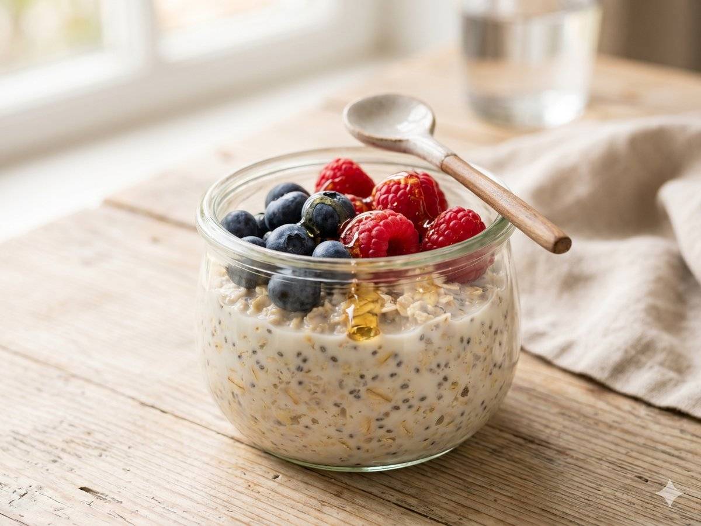

Five-Minute Overnight Oats
Stir tonight, eat tomorrow — the easiest breakfast you'll ever make.
5 min · Serves 1 · Mise Kitchen

Ingredients
- 1/2 cup rolled oats
- 1/2 cup milk
- 1/4 cup yogurt
- 1 tablespoon chia seeds
- 1 teaspoon honey
- 1/2 cup berries
Directions
- Stir the oats, milk, yogurt, chia seeds, and honey together in a jar.
- Cover and refrigerate overnight.
- Top with berries before eating.
An original recipe from Mise Kitchen. Free to save and cook.